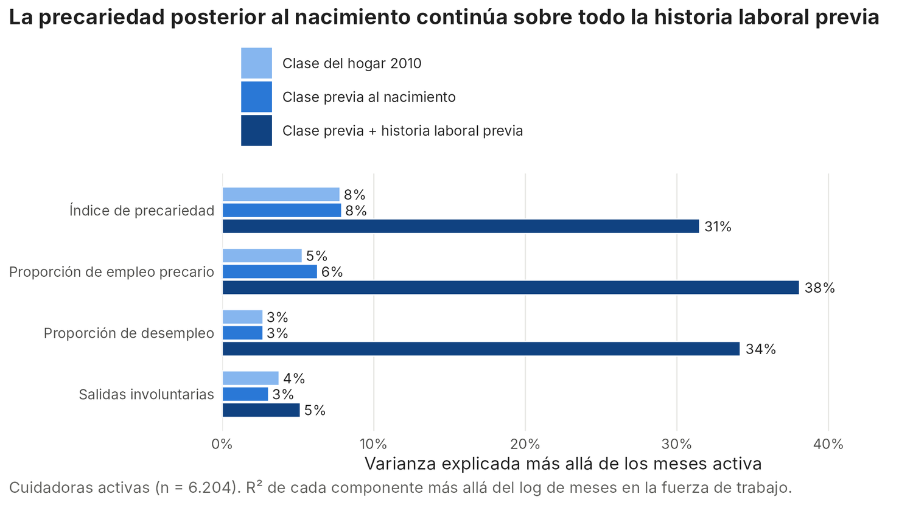
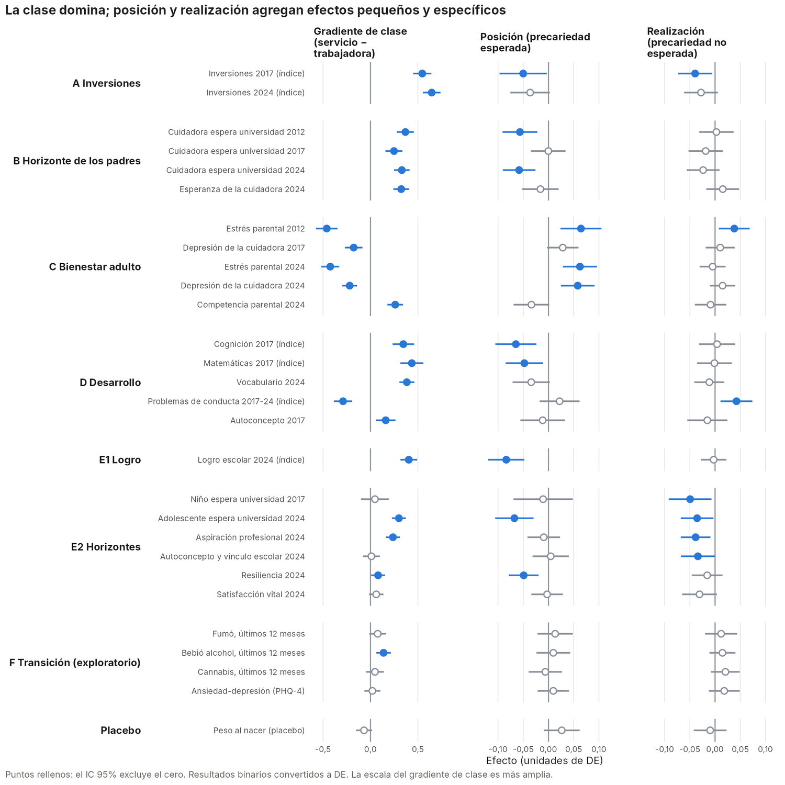
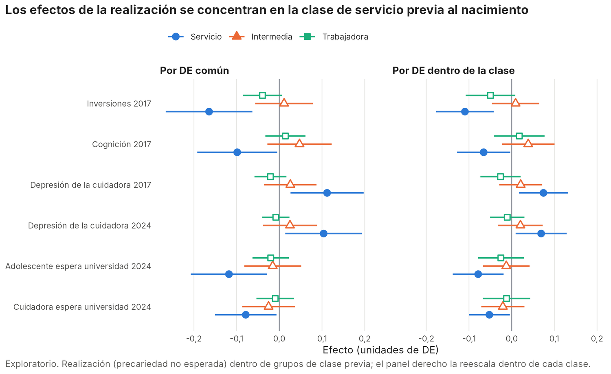

Posición contractual, shocks laborales y vida de niñas y niños en Chile. Decisiones de análisis y resultados para discutir con el comité
Gonzalo Torres RosalesDoctorado en Sociología, Pontificia Universidad Católica de Chile · Noviembre 2026
Los hogares más expuestos a perder el empleo son también los que tienen menos recursos. Si la clase ya capta quién está expuesto a perder, la inseguridad podría ser clase con otro nombre.
La clase de servicio se define por empleo seguro y perspectivas de largo plazo (Erikson y Goldthorpe 1992; Goldthorpe y McKnight 2006). Los riesgos de pobreza siguen estratificados por clase (Gioachin et al. 2023).
La inseguridad se ha extendido a las clases medias (Ranci et al. 2021) y pesa sobre familias lejos de la pobreza (Cooper 2014). Sería un eje propio de desigualdad.
Descompongo la inseguridad en cinco elementos (exposición, realización, magnitud, colchones y anticipación) y busco los que la clase ocupacional no determina por completo.
Dos madres con el mismo empleo administrativo pueden tener posiciones contractuales distintas, una con contrato indefinido y otra encadenando plazos fijos. La dualización atraviesa las ocupaciones (Emmenegger et al. 2012; Schwander y Häusermann 2013).
Si el contrato es estable y predecible, debería comportarse como la clase.
Estar en una posición donde las pérdidas son probables no es lo mismo que sufrirlas. La parte de las pérdidas que la posición no predecía está, por construcción, menos ligada a la clase.
Si la inseguridad tiene efectos propios, deberían verse en esa parte.
Mecanismos. La posición actuaría por recursos acumulados, sobre capacidades y malestar crónico. Los shocks actuarían por incertidumbre, sobre horizontes, conducta y, quizá, planificación del hogar.
La prueba no es si la inseguridad se asocia con los resultados, sino con cuáles. Si fuera clase con otro nombre, reproduciría el perfil de la clase en menor tamaño.
| Dominio | Clase | Posición (precariedad esperada) | Shocks (precariedad no esperada) |
|---|---|---|---|
| Inversión y planificación del hogar | Gradiente fuerte | Negativa | Nula por la vía de recursos, negativa por la vía de planificación Fijada: nula |
| Bienestar familiar | Gradiente fuerte | Más malestar de la cuidadora | Más problemas de conducta Fijada: daño |
| Capacidades de los niños | Gradiente fuerte | Negativa | Nula Fijada: nula en cognición |
| Horizontes de los niños | Gradiente fuerte | Débil o nula | Negativa |
Las tres predicciones marcadas se fijaron el 31 de octubre de 2026, antes de construir los índices de inversión, cognición y conducta. El resto del análisis es exploratorio.
Primera ola. Niñas y niños nacidos 2006–2009. Ingreso, tenencia de vivienda, bienes durables, ocupación de la pareja.
Historia laboral mensual de la madre desde enero 2004: empleo, desempleo, inactividad, contrato y motivo de salida.
Cognición, matemáticas, conducta (CBCL), inversiones, expectativas. Situación laboral de una semana.
Adolescentes: expectativas, aspiraciones, vínculo escolar, logro, salud mental. Situación laboral de una semana.
Muestra: además, ingreso del hogar observado en al menos tres olas.
| Opción | Qué permite | Problema | Decisión |
|---|---|---|---|
| Historia mensual nacimiento–2012 | Ver cada mes, separar historia previa y posterior, contar salidas involuntarias | Exposición temprana; resultados medidos 5 a 12 años después | Elegida Es la única medida con secuencia mensual |
| Instantánea 2017 | Exposición más cercana a los resultados de 2024 | Una semana de referencia. No distingue un evento de un estado | Extensión Probada como realización tardía (script 10) |
| Instantánea 2024 | Pérdida de empleo del hogar en 2024 | Contemporánea a los resultados. Riesgo de causalidad inversa | Descartada como exposición principal |
Resultado de la extensión. La precariedad de 2017 no predicha por la posición ni por la precariedad anterior no se relaciona con los resultados de 2024. Con una medida de un solo momento, este nulo no dice si importa cuándo ocurre el shock.
| Elemento | Elección | Por qué |
|---|---|---|
| Madre | Ocupación del último empleo antes del parto | Fija la clase antes de la ventana de exposición |
| Pareja | Ocupación reportada en 2010 | No tiene historia laboral. Queda dentro de la ventana (limitación) |
| Regla de hogar | Clase del miembro con mayor ISEI | Criterio de dominancia habitual |
| Esquema | EGP en tres grupos más spline de ISEI | Grupos para comparar, ISEI para el ajuste fino |
| Grupos | Servicio I–II · Intermedia III, IVab · Trabajadora V–VII, IVc | Tamaños suficientes para estimar dentro de cada clase |
n por grupo: servicio 1.516 · intermedia 2.070 · trabajadora 2.329
Todo se calcula entre el nacimiento y 2012. El índice es el promedio de los tres componentes estandarizados, reescalado a desviación estándar uno.
Sobre los meses en la fuerza de trabajo, no sobre el total, para no confundir inactividad con desempleo.
Salidas no voluntarias según el motivo de salida declarado en la historia laboral.
Sin contrato firmado, a plazo fijo, por obra o faena, de servicios transitorios o a honorarios.
Por qué no un solo indicador. Las definiciones de empleo precario varían mucho (Kreshpaj et al. 2020). Combinar estado contractual, desempleo y eventos permite ver después qué parte es posición y qué parte es evento.
| Predictor | Para qué está |
|---|---|
| Clase EGP previa y spline de ISEI | Posición ocupacional |
| Educación de la madre | Recursos y empleabilidad |
| Proporción precaria previa | Posición contractual anterior |
| Proporción en desempleo previa | Riesgo de desempleo anterior |
| Meses activa y meses observables antes | Igualar la cantidad de historia disponible |
| Log de meses activa después | Comparar madres con inserción similar |
| Qué es | Qué no es | Consecuencia para la lectura | |
|---|---|---|---|
| Precariedad esperada | Lo que la posición observable del hogar hacía probable | No es puramente estructural: la historia previa refleja también decisiones de la madre | Su coeficiente absorbe la confusión ligada a la posición. Se describe, no se interpreta como efecto |
| Precariedad no esperada | Lo que la posición no predecía | No es puramente un shock exógeno: incluye error de medición y lo que la madre podía prever | El error atenúa sus asociaciones. Su valor está en que casi no se relaciona con la clase |
Validación con datos no usados. La no esperada predice empleo precario de la madre en 2017: +3 puntos porcentuales por DE, neto de ingreso y clase. Capta algo más que ruido.
Término a discutir. "Shock" puede sobrestimar lo que mide el residuo. La alternativa es "precariedad no predicha" en todo el texto.
| Dominio | Medidas (ola) | Informante | Exige |
|---|---|---|---|
| Inversión y planificación del hogar | Índices de inversión 2017 y 2024 (colegio no público, materiales, computador, libros, lectura, extraprogramáticas, salidas culturales); expectativa universitaria de la cuidadora (2012, 2017, 2024); esperanza (2024) | Cuidadora | Recursos y horizonte |
| Bienestar familiar | Estrés parental (2012, 2024); depresión de la cuidadora (2017, 2024); competencia parental (2024); conducta CBCL (2017, 2024); consumo y ansiedad adolescente (2024) | Cuidadora, adolescente | Responde a la disrupción |
| Capacidades de los niños | Índice cognitivo (vocabulario, control inhibitorio, memoria de trabajo, 2017); matemáticas (2017); vocabulario y logro escolar (2024) | Evaluador, adolescente | Inversión sostenida |
| Horizontes de los niños | Expectativa universitaria (2017, 2024); aspiración ocupacional; autoconcepto y vínculo escolar; resiliencia; satisfacción vital | Niño, adolescente | Futuro predecible |
Índices = promedios de componentes estandarizados (Anderson 2008). Placebo: peso al nacer. Que los dominios tengan informantes distintos ayuda a descartar que el ánimo de un solo informante produzca el patrón.
| Elemento | Elección | Razón |
|---|---|---|
| Exposición | Precariedad esperada y no esperada juntas, por DE | Comparar ambas partes en el mismo modelo |
| Ingreso | Splines naturales del rango de ingreso 2010 (4 g.l.) | Separar la inseguridad del nivel de recursos sin imponer linealidad |
| Inserción laboral | Log de meses en la fuerza de trabajo | Comparar madres con exposición laboral similar |
| Controles | Educación de la cuidadora, región, puntajes WAIS de la cuidadora, depresión posparto diagnosticada; edad y sexo en resultados de los niños | Confusores previos al período de exposición |
| Gradiente de clase | Servicio menos trabajadora, solo con región, edad y sexo | Describir el tamaño total de la clase como referencia |
| Pesos | Longitudinales 2012–2017 o 2010–2024 según la ola; descriptivos sin pesos | Los pesos 2012–2017 dejaban fuera 30% de la muestra descriptiva |
| Ingreso faltante | 40 imputaciones combinadas con reglas de Rubin | Incorporar la incertidumbre de la imputación |
| Errores estándar | Agrupados por comuna | Dependencia territorial del muestreo |
Efecto mínimo de interés: 0,05 DE. Un nulo predicho debe ser un nulo informativo, no solo un resultado no significativo (Lakens 2017).
| Predicción | Se cumple si | Falla si | Inconclusa si |
|---|---|---|---|
| Nulo (inversiones, cognición) | IC 95% dentro de ±0,05 DE | Efecto dañino significativo y de al menos 0,05 DE | Ni lo uno ni lo otro |
| Daño (conducta) | Efecto dañino significativo tras Holm | Efecto protector significativo | No significativo |
| Contrastes | Daño en conducta mayor que en cognición y que en inversiones, con Holm | Diferencia no significativa o invertida | — |
Contrastes entre resultados estimados con modelos apilados, para que la diferencia tenga su propio error estándar.
Todo lo demás es exploratorio y así se reporta: atlas completo, efectos dentro de clase, colchones y realización tardía.

Excepción: la historia previa explica solo 5% de las salidas involuntarias. Esas sí se comportan como eventos.
| Bloque | Predicción | Posición (DE) | Shocks (DE) | Veredicto |
|---|---|---|---|---|
| Inversiones | Nula | −0,045 [−0,085; −0,005] | −0,047 [−0,081; −0,013] | Falla inconclusa según la regla |
| Cognición | Nula | −0,064 [−0,104; −0,024] | 0,004 [−0,031; 0,039] | Se cumple nulo informativo |
| Problemas de conducta | Daño | 0,022 [−0,018; 0,062] | 0,042 [0,011; 0,074] | Se cumple Holm p = 0,013 |
| Conducta − cognición | Mayor daño | 0,046 [0,003; 0,089] | Se cumple Holm p = 0,034 | |
| Conducta − inversiones | Mayor daño | −0,005 [−0,052; 0,043] | Falla Holm p = 0,58 |
Lo que enseña la predicción fallida. Los shocks reducen la inversión tanto como la posición. Los hogares parecen recortar compromisos de largo plazo ante pérdidas inesperadas, como predice la vía de la planificación. El estrés parental de 2012 explica poco de la conducta (0,058 → 0,048).
n ≈ 3.250–3.300, pesos 2012–2017.

La inseguridad no compite con la clase como fuente de desigualdad. La pregunta es si sus partes reproducen el perfil de la clase o tienen uno propio.
Puntos rellenos: IC 95% excluye el cero. Binarios convertidos a DE. El gradiente de clase tiene su propia escala. Placebo nulo en todos los casos.
| Dominio | Posición | Shocks |
|---|---|---|
| Inversión y planificación | Menor inversión; menores expectativas de la cuidadora | Menor inversión (−0,05 DE); las expectativas de la cuidadora no cambian |
| Bienestar familiar | Más estrés parental y depresión (+0,06 DE) | Más problemas de conducta; sin efecto en depresión ni estrés posteriores |
| Capacidades | Cognición −0,06, matemáticas −0,05, logro −0,08 DE | Nada nulo informativo en cognición |
| Horizontes | Débil | Expectativa universitaria −2,4 pp (2017) y −1,6 pp (2024); aspiración −1,9 pp; menor vínculo escolar |
| Sin efecto | — | Consumo, ansiedad, resiliencia y satisfacción vital adolescente |

| Explicación alternativa | Qué muestran los datos |
|---|---|
| Escala | En parte La no esperada varía menos en servicio. Al reescalar por clase, las estimaciones bajan un tercio y siguen significativas |
| Ruido en clase trabajadora | No Ahí la no esperada predice mejor la precariedad posterior |
| Movilidad descendente | No Los shocks no predicen salir de servicio; igual efecto entre quienes se quedan |
En servicio, por DE común: inversión 2017 −0,17 · cognición −0,10 · depresión de la cuidadora 2017 +0,11 · expectativa universitaria adolescente −5,4 pp. En clase trabajadora, cerca de cero.
| Colchón (2010) | Predicción | Resultado |
|---|---|---|
| Índice de 11 bienes durables | Atenúa el daño | No Ninguna interacción en la dirección esperada sobrevive a Holm |
| Ingreso (rango 2010) | Atenúa el daño | No Interacciones cercanas a cero |
| Vivienda propia pagada | Atenúa el daño | Débil 6 de 6 en la dirección esperada; ninguna sobrevive a Holm |
| Vivienda cedida por familiares | Sin pago, debería proteger igual | No No protege |
| Vivienda con dividendo | Obligación fija amplifica | Coherente Mayor daño: inversión −0,12 DE por DE de shock |
Lectura tentativa. El daño parece depender menos de los recursos acumulados que de las obligaciones fijas. Probarlo exige medir riqueza y deuda directamente, y la ELPI no lo hace.
¿Es defendible llamar "shocks" a la precariedad no predicha, o conviene un término más descriptivo?
¿La predicción fallida en inversiones debe ser un hallazgo central del artículo o quedar como resultado secundario?
¿El hallazgo dentro de la clase de servicio va en el cuerpo del artículo o en material suplementario?
¿Mantengo la sección de colchones, con sus nulos, o la reduzco a una nota de limitaciones?
Con un artículo de estratificación, ¿Research in Social Stratification and Mobility es la revista adecuada?